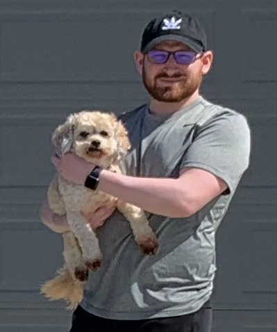
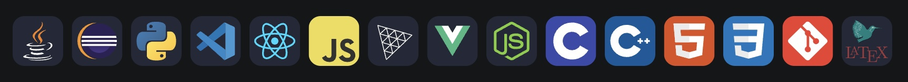

Welcome! I'm Nick, software engineer.
-

About Me / Skills
I'm currently a rising Junior at Iowa State University majoring in Software Engineering. I have experience with Java, Python, C/C++, HTML/CSS/JS. I have experience with backend engineering through my SWE Internship @ John Deere and Iowa State coursework. I am also enjoying front-end development through self-learning building this website and my first app. I eventually want to learn threeJS and make a more professional portfolio. I enjoy solving problems, helping people and making cool stuff ☺
-

Currently Seeking
I am currently seeking SWE Internships for Spring & Summer 2024! (and potentially Fall 2024)
I am interested in GPS/Navigation for any tech company with a Maps platform or avionics/satellite application for an aerospace company. I am also interested in fintech internships with my previous finance industry experience.
Professional Experience - I've worked at these companies:
Software Engineering Intern
Finance Specialist
Finance Specialist
I went back to school for engineering in my late twenties after about eight years in the finance industry (Wells Fargo, Toyota). My freshman year I was still full-time at Wells Fargo while taking full-time Aerospace Engineering classes, this was around the time I decided I enjoyed programming and switched my major. My entire sophomore year at Iowa State I was a Software Engineering Intern at John Deere (20 hrs/wk) working on vehicle software testing and was exposed to multiple technologies including Java, C/C++ and GPS/Navigation methods. I also helped them manage tractor data using Python and MATLAB.
Projects
Please check my GitHub profile, I made a lot of effort to showcase them there.
What am I currently working on?
Building: I am building my first app! I am working on a fairly large solo project involving building an app from scratch using React Native and Google/Apple Maps API to help Iowa State Students. I don't have an urgent timeline for this as I'm very busy with school, but I also want to make sure it's the quality I expect of myself before it's released. I plan on finishing it within this next year along with unit testing in small batches. If you'd like to know more about the app, feel free to reach out to me!
Self-Learning: I am trying to focus on solving algorithm problems as I know it is an important skill to have as a software engineer. I am currently focusing on my full-stack development skills. A majority of my early coursework at Iowa State involved back-end engineering projects in Java. I am actively teaching myself about ReactJS, React Native, Front-End Frameworks, UI/UX. In addition, I'm learning on my own about version control with Git and GitHub.